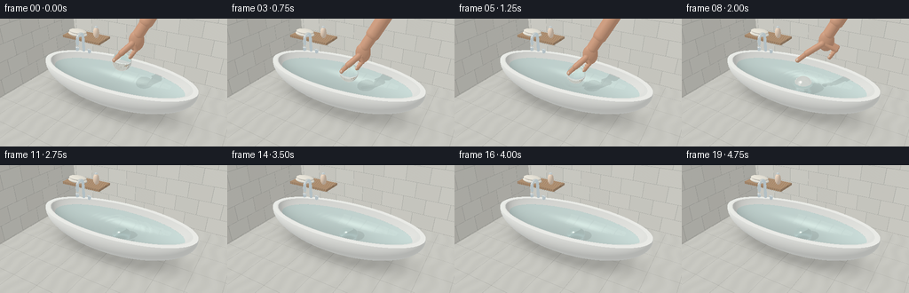
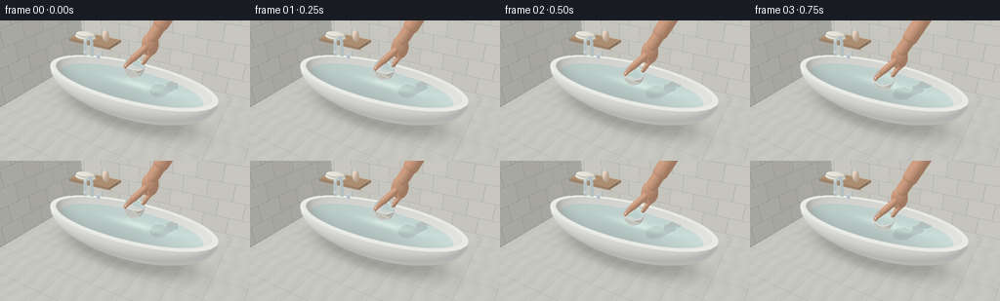

CODING AGENTS AS PIXEL WORLD MODELS
traex/GPT-6.1-Sol · phygen_010
点击播放 · 原生 RGB 像素
逐轮保存的候选
回放视频、检查图与代码变化。
每份候选均可单独播放。实际图片检查记录在下方工具轨迹中。
候选 01播放与检查图
点击播放 · 原生 RGB 像素


展开代码变化
--- 上一保存版本
+++ 本次保存版本
@@ -0,0 +1,439 @@
+"""Procedural, deterministic RGB rendering; no external assets or rendering engines."""
+from pathlib import Path
+import json, math, time
+import numpy as np
+from PIL import Image
+import artifact_io
+
+ROOT=Path(__file__).resolve().parent
+SPEC=json.loads((ROOT/'task_spec.json').read_text())
+W,H=SPEC['width'],SPEC['height']
+SS=2
+WW,HH=W*SS,H*SS
+DT=np.float32
+EPS=0.0007
+WATER=.91
+RAD=.31
+BXY=np.array([.40,-.17],dtype=DT)
+FAR=1e5
+
+def unit(a):
+ return a/np.maximum(np.linalg.norm(a,axis=-1,keepdims=True),1e-12)
+def dot(a,b): return np.sum(a*b,axis=-1)
+def vec(a): return np.asarray(a,dtype=DT)
+def mix(a,b,t): return a*(1-t)+b*t
+
+def reflect(d,n): return d-2*dot(d,n)[:,None]*n
+
+def refract(d,n,eta):
+ e=np.asarray(eta,dtype=DT)
+ if e.ndim: e=e[:,None]
+ c=-dot(d,n)[:,None]
+ k=1-e*e*(1-c*c)
+ return unit(e*d+(e*c-np.sqrt(np.maximum(k,0)))*n)
+
+def ellhit(o,d,c,r):
+ oc=(o-c)/r
+ v=d/r
+ A=dot(v,v); B=dot(oc,v); C=dot(oc,oc)-1
+ dis=B*B-A*C
+ s=np.sqrt(np.maximum(dis,0))
+ t1=(-B-s)/A; t2=(-B+s)/A
+ t=np.where(t1>EPS,t1,t2)
+ t=np.where((dis>=0)&(t>EPS),t,FAR)
+ return t
+
+def caphit(o,d,a,b,r):
+ ba=b-a; oa=o-a
+ baba=np.dot(ba,ba); bard=d@ba; baoa=oa@ba
+ rdoa=dot(d,oa); oaoa=dot(oa,oa)
+ A=baba-bard*bard; B=baba*rdoa-baoa*bard
+ C=baba*oaoa-baoa*baoa-r*r*baba
+ h=B*B-A*C
+ tc=(-B-np.sqrt(np.maximum(h,0)))/np.maximum(A,1e-8)
+ y=baoa+tc*bard
+ good=(h>=0)&(tc>EPS)&(y>0)&(y<baba)
+ ta=ellhit(o,d,a,np.full(3,r,dtype=DT)); tb=ellhit(o,d,b,np.full(3,r,dtype=DT))
+ t=np.minimum(np.where(good,tc,FAR),np.minimum(ta,tb))
+ p=o+d*t[:,None]
+ q=a+np.clip(((p-a)@ba)/baba,0,1)[:,None]*ba
+ n=unit(p-q)
+ return t,n
+
+# Camera: a fixed, natural bathroom three-quarter view.
+CAM=vec([3.8,-6.6,5.25])
+TARGET=vec([0,0,.68])
+FORWARD=unit(TARGET-CAM)
+RIGHT=unit(np.cross(FORWARD,vec([0,0,1])))
+UP=np.cross(RIGHT,FORWARD)
+yy,xx=np.mgrid[0:HH,0:WW]
+focal=.5*WW/math.tan(math.radians(48)/2)
+DIR=unit(FORWARD+((xx+.5-WW/2)/focal)[...,None]*RIGHT-((yy+.5-HH/2)/focal)[...,None]*UP).reshape(-1,3).astype(DT)
+ORIG=np.broadcast_to(CAM,DIR.shape)
+SCREEN_U=unit(vec([6.6,3.8,0]))
+SCREEN_V=unit(vec([3.8,-6.6,0]))
+LIGHT=unit(vec([-3,-4,7]))
+
+OUT_C=vec([0,0,1.03]); OUT_R=vec([2.85,1.24,1.04])
+IN_C=vec([0,0,1.35]); IN_R=vec([2.68,1.09,1.15])
+RIM=1.12
+
+# Scene material identifiers: ceramic, stone, tile, chrome, skin, wood, linen, glass, water.
+BASES={0:vec([.88,.89,.855]),1:vec([.63,.63,.585]),2:vec([.77,.765,.706]),3:vec([.77,.80,.81]),4:vec([.65,.36,.23]),5:vec([.46,.30,.18]),6:vec([.83,.80,.715]),7:vec([1,1,1]),8:vec([.34,.56,.57]),10:vec([.90,.73,.58]),11:vec([.67,.76,.72])}
+
+# Tub-mounted chrome faucet and controls, all genuine 3D geometry.
+STATIC_CAPS=[]
+def addcap(a,b,r,mat=3): STATIC_CAPS.append((vec(a),vec(b),r,mat))
+addcap([-1.87,.89,1.13],[-1.87,.89,1.70],.055)
+# Rounded swan-neck bending inwards over the water.
+curve=[]
+for th in np.linspace(0,np.pi,11):
+ curve.append(vec([-1.87,.71+.18*np.cos(th),1.70+.18*np.sin(th)]))
+for a,b in zip(curve[:-1],curve[1:]): addcap(a,b,.056)
+addcap(curve[-1],[-1.87,.53,1.55],.056)
+addcap([-2.13,.82,1.13],[-2.13,.82,1.22],.063)
+addcap([-1.60,.89,1.13],[-1.60,.89,1.22],.063)
+addcap([-2.20,.82,1.23],[-2.06,.82,1.23],.025)
+addcap([-1.68,.89,1.23],[-1.53,.89,1.23],.025)
+
+# Simple shelf and amber bottle in the rear of the room.
+BOXES=[(vec([-3.5,1.58,1.16]),vec([-1.6,2.46,1.26]),5)]
+STATIC_ELL=[(vec([-2.90,1.88,1.33]),vec([.48,.25,.10]),6),
+ (vec([-2.88,1.88,1.44]),vec([.44,.235,.09]),6),
+ (vec([-2.03,2.04,1.48]),vec([.13,.13,.24]),10),
+ (vec([-2.03,2.04,1.74]),vec([.07,.07,.047]),3)]
+
+class Scene:
+ def __init__(self,t):
+ self.t=t
+ ground=IN_C[2]-IN_R[2]*math.sqrt(1-(BXY[0]/IN_R[0])**2-(BXY[1]/IN_R[1])**2)
+ bottom=ground+RAD
+ # Ease into contact, hold it gently, then release a dense glass sphere.
+ contact=.95; release=1.40
+ if t<contact:
+ q=np.clip(t/contact,0,1); q=q*q*(3-2*q)
+ z=mix(1.67,WATER+RAD,q)
+ elif t<release: z=WATER+RAD-.015*(t-contact)/(release-contact)
+ else:
+ s=t-release
+ drop=1.00*s-.19*(1-np.exp(-s/.19))
+ z=max(bottom,WATER+RAD-.015-drop)
+ self.ball=vec([BXY[0],BXY[1],z])
+ self.bottom=bottom
+ self.hand=[]; self.nails=[]
+ if t<2.75:
+ # The held hand follows the sphere only until release; afterward it opens and rises.
+ lift=max(0,t-release)
+ hz=(z if t<=release else WATER+RAD-.015)+1.28*lift*lift
+ bx=vec([BXY[0],BXY[1],hz])+SCREEN_U*(.70*lift*lift)
+ spread=min(lift/.38,1)*.30
+ def p(u,v,z): return bx+SCREEN_U*u+SCREEN_V*v+vec([0,0,z])
+ def hc(a,b,r): self.hand.append((a,b,r,4))
+ # Palm, wrist, and bare forearm, tapering at the wrist.
+ self.palm=(p(.43,-.025,.68),vec([.24,.175,.33]))
+ hc(p(.48,-.035,.89),p(.71,-.075,1.27),.177)
+ hc(p(.71,-.075,1.27),p(1.16,-.16,2.00),.213)
+ # Four softly bent fingers on the right/back side of the glass.
+ for i in range(4):
+ v=-.17+i*.095
+ u=.37+.035*(3-i)
+ ln=[.31,.40,.42,.38][i]
+ start=p(u,v,.62)
+ mid=p(u+.05+spread,v,.43)
+ end=p(.23+.035*(3-i)+spread,v,.14+.055*abs(i-2))
+ hc(start,mid,.060 if i else .051)
+ hc(mid,end,.051 if i else .044)
+ # A small lighter nail bed faces the camera, not painted white.
+ nc=end+SCREEN_V*.031+vec([0,0,.02])
+ self.nails.append((nc,vec([.039,.014,.059]),10))
+ # Opposable thumb crosses to the near-left edge of the ball.
+ a=p(.29,.115,.64); b=p(-.03-spread*.45,.19,.37); c=p(-.23-spread*.70,.14,.11)
+ hc(a,b,.095); hc(b,c,.073)
+ self.nails.append((c+SCREEN_V*.054+vec([0,0,.027]),vec([.051,.018,.060]),10))
+
+ def hit(self,o,d,water=True,ball=True,hand=True):
+ N=len(d); tt=np.full(N,FAR,dtype=DT); nn=np.zeros((N,3),DT); mm=np.full(N,-1,np.int16)
+ def put(t,n,m):
+ k=(t<tt)&(t>EPS)
+ tt[k]=t[k]; nn[k]=n[k] if np.ndim(n)>1 else n; mm[k]=m
+ # Pale stone floor.
+ tf=(-.045-o[:,2])/np.where(abs(d[:,2])>1e-8,d[:,2],1e-8)
+ put(tf,vec([0,0,1]),1)
+ # Large staggered bathroom tiles, back wall and left return.
+ tw=(2.62-o[:,1])/np.where(abs(d[:,1])>1e-8,d[:,1],1e-8)
+ put(tw,vec([0,-1,0]),2)
+ tl=(-3.65-o[:,0])/np.where(abs(d[:,0])>1e-8,d[:,0],1e-8)
+ put(tl,vec([1,0,0]),2)
+ # Exterior of the free-standing ceramic bath.
+ t=ellhit(o,d,OUT_C,OUT_R); p=o+d*t[:,None]
+ n=unit((p-OUT_C)/(OUT_R*OUT_R))
+ put(np.where(p[:,2]<=RIM,t,FAR),n,0)
+ # Interior, cut out of the same continuous solid; normals face into the bowl.
+ t=ellhit(o,d,IN_C,IN_R); p=o+d*t[:,None]
+ # For origins outside the bowl, the first root can be above the lip. Choose the second root.
+ oo=(o-IN_C)/IN_R; dd=d/IN_R
+ A=dot(dd,dd); B=dot(oo,dd); disc=B*B-A*(dot(oo,oo)-1)
+ t2=(-B+np.sqrt(np.maximum(disc,0)))/A
+ bad=(p[:,2]>RIM)&(disc>=0)
+ t=np.where(bad,t2,t); p=o+d*t[:,None]
+ n=-unit((p-IN_C)/(IN_R*IN_R))
+ put(np.where((p[:,2]<=RIM)&(disc>=0),t,FAR),n,0)
+ # Horizontal elliptical ceramic rim.
+ t=(RIM-o[:,2])/np.where(abs(d[:,2])>1e-8,d[:,2],1e-8); p=o+d*t[:,None]
+ out=dot((p-OUT_C)/OUT_R,(p-OUT_C)/OUT_R)<=1.00001
+ inn=dot((p-IN_C)/IN_R,(p-IN_C)/IN_R)>=1
+ put(np.where(out&inn,t,FAR),vec([0,0,1]),0)
+ for lo,hi,m in BOXES:
+ dv=np.where(abs(d)>1e-8,d,1e-8)
+ t0=(lo-o)/dv; t1=(hi-o)/dv
+ tnear=np.minimum(t0,t1); tfar=np.maximum(t0,t1)
+ near=np.max(tnear,axis=1); far=np.min(tfar,axis=1)
+ t=np.where((near<far)&(near>EPS),near,FAR)
+ n=np.zeros_like(o); ax=np.argmax(tnear,axis=1); n[np.arange(N),ax]=-np.sign(d[np.arange(N),ax])
+ put(t,n,m)
+ for c,r,m in STATIC_ELL:
+ t=ellhit(o,d,c,r); p=o+d*t[:,None]; n=unit((p-c)/(r*r)); put(t,n,m)
+ for a,b,r,m in STATIC_CAPS:
+ t,n=caphit(o,d,a,b,r); put(t,n,m)
+ if hand and self.hand:
+ # Rotated ellipsoid palm in screen axes.
+ c,r=self.palm
+ op=np.stack([(o-c)@SCREEN_U,(o-c)@SCREEN_V,o[:,2]-c[2]],axis=1)
+ dp=np.stack([d@SCREEN_U,d@SCREEN_V,d[:,2]],axis=1)
+ t=ellhit(op,dp,vec([0,0,0]),r)
+ pp=op+dp*t[:,None]; npal=unit(pp/(r*r))
+ n=npal[:,0,None]*SCREEN_U+npal[:,1,None]*SCREEN_V+npal[:,2,None]*vec([0,0,1])
+ put(t,n,4)
+ for a,b,r,m in self.hand:
+ t,n=caphit(o,d,a,b,r); put(t,n,m)
+ for c,r,m in self.nails:
+ op=np.stack([(o-c)@SCREEN_U,(o-c)@SCREEN_V,o[:,2]-c[2]],axis=1)
+ dp=np.stack([d@SCREEN_U,d@SCREEN_V,d[:,2]],axis=1)
+ t=ellhit(op,dp,vec([0,0,0]),r); pp=op+dp*t[:,None]; npal=unit(pp/(r*r))
+ n=npal[:,0,None]*SCREEN_U+npal[:,1,None]*SCREEN_V+npal[:,2,None]*vec([0,0,1])
+ put(t,n,10)
+ if ball:
+ t=ellhit(o,d,self.ball,vec([RAD,RAD,RAD])); p=o+d*t[:,None]
+ put(t,unit(p-self.ball),7)
+ if water:
+ t=(WATER-o[:,2])/np.where(abs(d[:,2])>1e-8,d[:,2],1e-8); p=o+d*t[:,None]
+ inside=dot((p-IN_C)/IN_R,(p-IN_C)/IN_R)<1
+ n=np.zeros_like(d); n[:,2]=1
+ # Low-amplitude circular gravity waves, generated by contact and release.
+ dx=p[:,0]-BXY[0]; dy=p[:,1]-BXY[1]; rr=np.sqrt(dx*dx+dy*dy)
+ dr=np.zeros(N,DT)
+ for start,amp in [(.90,.025),(1.48,.022),(1.84,.015)]:
+ age=self.t-start
+ if age>0:
+ ring=.08+.69*age
+ q=(rr-ring)/.072
+ env=np.exp(-q*q/2)*np.exp(-age/1.7)
+ dr+=amp*env*(-q/.072*np.sin(q*1.55)+1.55/.072*np.cos(q*1.55))
+ # Far smaller pre-existing water undulations keep the surface natural.
+ dr=np.clip(dr,-.18,.18)
+ n[:,0]=-dr*dx/np.maximum(rr,.001)+.0020*np.cos(p[:,0]*8+p[:,1]*5+self.t*.35)
+ n[:,1]=-dr*dy/np.maximum(rr,.001)+.0025*np.sin(p[:,1]*10-p[:,0]*3+self.t*.23)
+ put(np.where(inside,t,FAR),unit(n),8)
+ return tt,nn,mm
+
+ def environment(self,d):
+ # A large soft-box/window outside the frame produces rectangular reflections.
+ c=np.tile(vec([.57,.66,.70]),(len(d),1))
+ z=np.clip(d[:,2],0,1)
+ c=mix(c,vec([.88,.87,.80]),z[:,None]*.72)
+ win=(d[:,0]<-.22)&(d[:,0]>-.83)&(d[:,1]<-.20)&(d[:,2]>.32)
+ bars=(np.mod((d[:,0]+.83)*7.6,1)>.09)&(np.mod((d[:,2]-.32)*5.0,1)>.065)
+ c[win&bars]=vec([2.9,2.8,2.55]); c[win&~bars]=vec([.43,.48,.49])
+ return c
+
+ def shade(self,o,d,t,n,m):
+ p=o+d*t[:,None]
+ base=np.tile(vec([.6,.6,.6]),(len(d),1))
+ for mat,col in BASES.items(): base[m==mat]=col
+ roughnoise=(np.sin(p[:,0]*113+p[:,1]*91+p[:,2]*67)*np.sin(p[:,1]*107-p[:,0]*83))
+ # Joint grout lines are thin and slightly recessed, not a bold grid.
+ k=m==2
+ if np.any(k):
+ q=p[k]; side=abs(n[k,0])>.5
+ u=np.where(side,q[:,1],q[:,0]); v=q[:,2]
+ row=np.floor(v/.62)
+ gx=np.abs(np.mod(u+row*.44+.44,.88)-.44)
+ gy=np.abs(np.mod(v+.31,.62)-.31)
+ seam=(gx<.009)|(gy<.007)
+ variation=.02*np.sin(np.floor((u+row*.44)/.88)*9+row*5)
+ base[k]*=(1+variation)[:,None]
+ bk=base[k]; bk[seam]=vec([.56,.57,.53]); base[k]=bk
+ base[k]+=(.003*roughnoise[k])[:,None]
+ k=m==1
+ if np.any(k):
+ q=p[k]; gx=np.abs(np.mod(q[:,0]+.48,.96)-.48); gy=np.abs(np.mod(q[:,1]+.48,.96)-.48)
+ grain=.016*np.sin(q[:,0]*13+np.sin(q[:,1]*5))+.004*roughnoise[k]
+ base[k]+=grain[:,None]
+ bk=base[k]; bk[(gx<.008)|(gy<.008)]*=.83; base[k]=bk
+ k=m==5
+ if np.any(k):
+ wood=.035*np.sin(p[k,0]*60+4*np.sin(p[k,1]*6))
+ base[k]+=wood[:,None]
+ k=m==6
+ if np.any(k):
+ weave=.012*np.sin(p[k,0]*190)*np.sin(p[k,1]*180)
+ base[k]+=weave[:,None]
+ lam=np.maximum(dot(n,LIGHT),0)
+ # Soft warm key light, cool fill, and ambient occlusion at the tub base.
+ illum=.57+.55*lam
+ k=m==0
+ if np.any(k):
+ pp=p[k]; nz=n[k,2]
+ inner=dot((pp-IN_C)/IN_R,(pp-IN_C)/IN_R)<1.04
+ ao=np.ones(len(pp),DT)
+ ao[inner]=.72+.20*np.clip((pp[inner,2]-.2)/.9,0,1)
+ ao*=.91+.09*np.clip(pp[:,2]/.35,0,1)
+ illum[k]*=ao
+ k=m==1
+ if np.any(k):
+ q=p[k]
+ foot=np.sqrt((q[:,0]/2.68)**2+(q[:,1]/1.10)**2)
+ shadow=.37*np.exp(-((np.maximum(foot-.6,0))/.35)**2)
+ illum[k]*=1-shadow
+ k=m==4
+ if np.any(k):
+ # Flesh-colored soft subsurface fill along the fingers.
+ base[k]+=vec([.045,.021,.01])*(1-lam[k,None])
+ base[k]+=(.002*roughnoise[k])[:,None]
+ col=base*illum[:,None]
+ hv=unit(LIGHT-d)
+ spec=np.maximum(dot(n,hv),0)
+ exponent=np.where(m==0,95,np.where(m==4,27,45))
+ strength=np.where(m==0,.21,np.where(m==4,.065,.05))
+ col+=((spec**exponent)*strength)[:,None]*vec([1,.96,.87])
+ # Crisp, broad reflected window on porcelain and steel.
+ k=(m==0)|(m==3)
+ if np.any(k):
+ rd=reflect(d[k],n[k]); env=self.environment(rd)
+ cos=np.clip(-dot(d[k],n[k]),0,1)
+ fres=.018+.14*(1-cos)**5
+ ck=col[k]
+ chrome=m[k]==3
+ ck[~chrome]+=env[~chrome]*fres[~chrome,None]
+ ck[chrome]=env[chrome]*.83+vec([.04,.05,.05])+.5*(spec[k][chrome]**100)[:,None]
+ col[k]=ck
+ # Light, physically plausible shadows from the held ball and fingers.
+ k=(m==0)&(p[:,2]<WATER+.02)
+ if np.any(k):
+ pp=p[k]; sd=np.broadcast_to(LIGHT,pp.shape)
+ ts=ellhit(pp+LIGHT*.005,sd,self.ball,vec([RAD,RAD,RAD]))
+ amount=np.where(ts<FAR,.83,1.)
+ if self.hand:
+ for a,b,r,_ in self.hand:
+ tt,_=caphit(pp+LIGHT*.005,sd,a,b,r*1.08)
+ amount=np.minimum(amount,np.where(tt<FAR,.78,1.))
+ col[k]*=amount[:,None]
+ # Subtle concentrated caustic under a clear glass ball, rather than an opaque black shadow.
+ dist=np.linalg.norm(pp[:,:2]-BXY,axis=1)
+ caustic=np.exp(-((dist-.22)/.055)**2)*.105*np.clip((WATER+RAD-self.ball[2])/.45,0,1)
+ col[k]+=caustic[:,None]*vec([.75,.94,1])
+ return np.maximum(col,0)
+
+ def trace(self,o,d,depth=0,water=True,ball=True,hand=True):
+ if not len(d): return np.empty((0,3),DT)
+ t,n,m=self.hit(o,d,water,ball,hand)
+ col=self.shade(o,d,t,n,m)
+ miss=m<0
+ if np.any(miss): col[miss]=self.environment(d[miss])
+ p=o+d*t[:,None]
+ kw=m==8
+ if np.any(kw):
+ pp=p[kw]; dd=d[kw]; normal=n[kw]
+ from_above=dd[:,2]<0
+ normal=np.where(from_above[:,None],normal,-normal)
+ eta=np.where(from_above,1/1.333,1.333)
+ td=refract(dd,normal,eta)
+ if depth<3:
+ through=self.trace(pp+td*.003,td,depth+1,water=False,ball=ball,hand=hand)
+ else:
+ through=self.trace(pp+td*.003,td,depth+1,water=False,ball=False,hand=False)
+ # Water is mostly transparent: show the curved white basin beneath it.
+ tint=vec([.79,.94,.94])
+ through*=tint
+ through=mix(through,vec([.24,.46,.46]),.025)
+ rd=reflect(dd,normal)
+ refl=self.environment(rd)
+ # An actual reflected hand or sphere is subtle on quiet water.
+ if depth==0 and self.hand:
+ tr,nr,mr=self.hit(pp+rd*.003,rd,water=False,ball=True,hand=True)
+ kk=(mr==4)|(mr==7)|(mr==10)
+ if np.any(kk):
+ rc=self.shade(pp[kk]+rd[kk]*.003,rd[kk],tr[kk],nr[kk],mr[kk])
+ refl[kk]=rc
+ cosine=np.clip(-dot(dd,normal),0,1)
+ fres=.0204+.9796*(1-cosine)**5
+ fres=np.clip(fres,.02,.60)
+ wc=mix(through,refl,fres[:,None])
+ hv=unit(LIGHT-dd)
+ sp=np.maximum(dot(normal,hv),0)**240
+ wc+=sp[:,None]*.58*vec([1,.98,.91])
+ col[kw]=wc
+ kg=m==7
+ if np.any(kg):
+ pp=p[kg]; dd=d[kg]; normal=n[kg]
+ submerged=pp[:,2]<WATER-.001
+ ambient_ior=np.where(submerged,1.333,1.)
+ ratio=ambient_ior/1.52
+ entering=dot(dd,normal)<0
+ normal=np.where(entering[:,None],normal,-normal)
+ ratio=np.where(entering,ratio,1/ratio)
+ inside=refract(dd,normal,ratio)
+ # Traverse the sphere, then refract at its second spherical interface.
+ oo=pp+inside*.002
+ t2=ellhit(oo,inside,self.ball,vec([RAD,RAD,RAD]))
+ exitp=oo+inside*t2[:,None]
+ exitn=-unit(exitp-self.ball)
+ exitior=np.where(exitp[:,2]<WATER,1.333,1.)
+ outdir=refract(inside,exitn,1.52/exitior)
+ if depth<3:
+ transmitted=self.trace(exitp+outdir*.003,outdir,depth+1,water=water,ball=False,hand=hand)
+ else:
+ transmitted=self.trace(exitp+outdir*.003,outdir,depth+1,water=False,ball=False,hand=False)
+ # Optical clear glass with a very faint green edge, not a blue solid marble.
+ thick=np.clip(t2,0,2*RAD)
+ transmitted*=np.exp(-thick[:,None]*vec([.080,.018,.023]))
+ rd=reflect(dd,normal)
+ reflected=self.environment(rd)
+ # Bathroom wall reflections, except the bright off-screen window which stays luminous.
+ if depth<2:
+ rt,rn,rm=self.hit(pp+rd*.003,rd,water=False,ball=False,hand=hand)
+ rc=self.shade(pp+rd*.003,rd,rt,rn,rm)
+ luminous=np.max(reflected,axis=1)>1.5
+ reflected[~luminous]=rc[~luminous]
+ cosine=np.clip(-dot(dd,normal),0,1)
+ f0=((1.52-ambient_ior)/(1.52+ambient_ior))**2
+ fr=f0+(1-f0)*(1-cosine)**5
+ gc=mix(transmitted,reflected,np.clip(fr,.02,.96)[:,None])
+ hv=unit(LIGHT-dd)
+ spec=np.maximum(dot(normal,hv),0)**190
+ gc+=spec[:,None]*vec([1.3,1.23,1.09])
+ # A bright slender rim on the light-facing edge is the recognizable glass silhouette.
+ edge=(1-cosine)**9
+ gc+=edge[:,None]*vec([.065,.10,.105])
+ col[kg]=gc
+ return np.nan_to_num(np.maximum(col,0),nan=.5,posinf=1,neginf=0)
+
+
+def main():
+ frames=[]
+ start=time.time()
+ for i in range(SPEC['frames']):
+ scene=Scene(i/SPEC['fps'])
+ linear=scene.trace(ORIG,DIR)
+ # Gentle photographic shoulder and sRGB display transform, not flat clipping.
+ linear*=.90
+ linear=np.where(linear<.85,linear,.85+(1-np.exp(-(linear-.85)*1.8))*.20)
+ rgb=np.clip(linear,0,1)**(1/2.2)
+ rgb=(rgb.reshape(HH,WW,3)*255+.5).astype(np.uint8)
+ image=Image.fromarray(rgb).resize((W,H),Image.Resampling.LANCZOS)
+ frames.append(np.asarray(image))
+ print(f'frame {i:02d}: {time.time()-start:.1f}s',flush=True)
+ artifact_io.save(np.stack(frames),ROOT)
+ print('Saved all required RGB artifacts.',flush=True)
+
+if __name__=='__main__': main()
可观测工具轨迹
实际执行的命令与返回图片。
命令 1exit 0
/bin/bash -lc "ls -la && cat prompt.txt && printf '\\n---RULES---\\n' && cat GENERATION_RULES.md && printf '\\n---SPEC---\\n' && cat task_spec.json"
命令 2exit 0
/bin/bash -lc "cat artifact_io.py && python - <<'PY' import numpy, PIL print(numpy.__version__) PY"
命令 3exit 0
/bin/bash -lc "cat > generate.py <<'PY'
\"\"\"Procedural, deterministic RGB rendering; no external assets or rendering engines.\"\"\"
from pathlib import Path
import json, math, time
import numpy as np
from PIL import Image
import artifact_io
ROOT=Path(__file__).resolve().parent
SPEC=json.loads((ROOT/'task_spec.json').read_text())
W,H=SPEC['width'],SPEC['height']
SS=2
WW,HH=W*SS,H*SS
DT=np.float32
EPS=0.0007
WATER=.91
RAD=.31
BXY=np.array([.40,-.17],dtype=DT)
FAR=1e5
def unit(a):
return a/np.maximum(np.linalg.norm(a,axis=-1,keepdims=True),1e-12)
def dot(a,b): return np.sum(a*b,axis=-1)
def vec(a): return np.asarray(a,dtype=DT)
def mix(a,b,t): return a*(1-t)+b*t
def reflect(d,n): return d-2*dot(d,n)[:,None]*n
def refract(d,n,eta):
e=np.asarray(eta,dtype=DT)
if e.ndim: e=e[:,None]
c=-dot(d,n)[:,None]
k=1-e*e*(1-c*c)
return unit(e*d+(e*c-np.sqrt(np.maximum(k,0)))*n)
def ellhit(o,d,c,r):
oc=(o-c)/r
v=d/r
A=dot(v,v); B=dot(oc,v); C=dot(oc,oc)-1
dis=B*B-A*C
s=np.sqrt(np.maximum(dis,0))
t1=(-B-s)/A; t2=(-B+s)/A
t=np.where(t1>EPS,t1,t2)
t=np.where((dis>=0)&(t>EPS),t,FAR)
return t
def caphit(o,d,a,b,r):
ba=b-a; oa=o-a
baba=np.dot(ba,ba); bard=d@ba; baoa=oa@ba
rdoa=dot(d,oa); oaoa=dot(oa,oa)
A=baba-bard*bard; B=baba*rdoa-baoa*bard
C=baba*oaoa-baoa*baoa-r*r*baba
h=B*B-A*C
tc=(-B-np.sqrt(np.maximum(h,0)))/np.maximum(A,1e-8)
y=baoa+tc*bard
good=(h>=0)&(tc>EPS)&(y>0)&(y<baba)
ta=ellhit(o,d,a,np.full(3,r,dtype=DT)); tb=ellhit(o,d,b,np.full(3,r,dtype=DT))
t=np.minimum(np.where(good,tc,FAR),np.minimum(ta,tb))
p=o+d*t[:,None]
q=a+np.clip(((p-a)@ba)/baba,0,1)[:,None]*ba
n=unit(p-q)
return t,n
# Camera: a fixed, natural bathroom three-quarter view.
CAM=vec([3.8,-6.6,5.25])
TARGET=vec([0,0,.68])
FORWARD=unit(TARGET-CAM)
RIGHT=unit(np.cross(FORWARD,vec([0,0,1])))
UP=np.cross(RIGHT,FORWARD)
yy,xx=np.mgrid[0:HH,0:WW]
focal=.5*WW/math.tan(math.radians(48)/2)
DIR=unit(FORWARD+((xx+.5-WW/2)/focal)[...,None]*RIGHT-((yy+.5-HH/2)/focal)[...,None]*UP).reshape(-1,3).astype(DT)
ORIG=np.broadcast_to(CAM,DIR.shape)
SCREEN_U=unit(vec([6.6,3.8,0]))
SCREEN_V=unit(vec([3.8,-6.6,0]))
LIGHT=unit(vec([-3,-4,7]))
OUT_C=vec([0,0,1.03]); OUT_R=vec([2.85,1.24,1.04])
IN_C=vec([0,0,1.35]); IN_R=vec([2.68,1.09,1.15])
RIM=1.12
# Scene material identifiers: ceramic, stone, tile, chrome, skin, wood, linen, glass, water.
BASES={0:vec([.88,.89,.855]),1:vec([.63,.63,.585]),2:vec([.77,.765,.706]),3:vec([.77,.80,.81]),4:vec([.65,.36,.23]),5:vec([.46,.30,.18]),6:vec([.83,.80,.715]),7:vec([1,1,1]),8:vec([.34,.56,.57]),10:vec([.90,.73,.58]),11:vec([.67,.76,.72])}
# Tub-mounted chrome faucet and controls, all genuine 3D geometry.
STATIC_CAPS=[]
def addcap(a,b,r,mat=3): STATIC_CAPS.append((vec(a),vec(b),r,mat))
addcap([-1.87,.89,1.13],[-1.87,.89,1.70],.055)
# Rounded swan-neck bending inwards over the water.
curve=[]
for th in np.linspace(0,np.pi,11):
curve.append(vec([-1.87,.71+.18*np.cos(th),1.70+.18*np.sin(th)]))
for a,b in zip(curve[:-1],curve[1:]): addcap(a,b,.056)
addcap(curve[-1],[-1.87,.53,1.55],.056)
addcap([-2.13,.82,1.13],[-2.13,.82,1.22],.063)
addcap([-1.60,.89,1.13],[-1.60,.89,1.22],.063)
addcap([-2.20,.82,1.23],[-2.06,.82,1.23],.025)
addcap([-1.68,.89,1.23],[-1.53,.89,1.23],.025)
# Simple shelf and amber bottle in the rear of the room.
BOXES=[(vec([-3.5,1.58,1.16]),vec([-1.6,2.46,1.26]),5)]
STATIC_ELL=[(vec([-2.90,1.88,1.33]),vec([.48,.25,.10]),6),
(vec([-2.88,1.88,1.44]),vec([.44,.235,.09]),6),
(vec([-2.03,2.04,1.48]),vec([.13,.13,.24]),10),
(vec([-2.03,2.04,1.74]),vec([.07,.07,.047]),3)]
class Scene:
def __init__(self,t):
self.t=t
ground=IN_C[2]-IN_R[2]*math.sqrt(1-(BXY[0]/IN_R[0])**2-(BXY[1]/IN_R[1])**2)
bottom=ground+RAD
# Ease into contact, hold it gently, then release a dense glass sphere.
contact=.95; release=1.40
if t<contact:
q=np.clip(t/contact,0,1); q=q*q*(3-2*q)
z=mix(1.67,WATER+RAD,q)
elif t<release: z=WATER+RAD-.015*(t-contact)/(release-contact)
else:
s=t-release
drop=1.00*s-.19*(1-np.exp(-s/.19))
z=max(bottom,WATER+RAD-.015-drop)
self.ball=vec([BXY[0],BXY[1],z])
self.bottom=bottom
self.hand=[]; self.nails=[]
if t<2.75:
# The held hand follows the sphere only until release; afterward it opens and rises.
lift=max(0,t-release)
hz=(z if t<=release else WATER+RAD-.015)+1.28*lift*lift
bx=vec([BXY[0],BXY[1],hz])+SCREEN_U*(.70*lift*lift)
spread=min(lift/.38,1)*.30
def p(u,v,z): return bx+SCREEN_U*u+SCREEN_V*v+vec([0,0,z])
def hc(a,b,r): self.hand.append((a,b,r,4))
# Palm, wrist, and bare forearm, tapering at the wrist.
self.palm=(p(.43,-.025,.68),vec([.24,.175,.33]))
hc(p(.48,-.035,.89),p(.71,-.075,1.27),.177)
hc(p(.71,-.075,1.27),p(1.16,-.16,2.00),.213)
# Four softly bent fingers on the right/back side of the glass.
for i in range(4):
v=-.17+i*.095
u=.37+.035*(3-i)
ln=[.31,.40,.42,.38][i]
start=p(u,v,.62)
mid=p(u+.05+spread,v,.43)
end=p(.23+.035*(3-i)+spread,v,.14+.055*abs(i-2))
hc(start,mid,.060 if i else .051)
hc(mid,end,.051 if i else .044)
# A small lighter nail bed faces the camera, not painted white.
nc=end+SCREEN_V*.031+vec([0,0,.02])
self.nails.append((nc,vec([.039,.014,.059]),10))
# Opposable thumb crosses to the near-left edge of the ball.
a=p(.29,.115,.64); b=p(-.03-spread*.45,.19,.37); c=p(-.23-spread*.70,.14,.11)
hc(a,b,.095); hc(b,c,.073)
self.nails.append((c+SCREEN_V*.054+vec([0,0,.027]),vec([.051,.018,.060]),10))
def hit(self,o,d,water=True,ball=True,hand=True):
N=len(d); tt=np.full(N,FAR,dtype=DT); nn=np.zeros((N,3),DT); mm=np.full(N,-1,np.int16)
def put(t,n,m):
k=(t<tt)&(t>EPS)
tt[k]=t[k]; nn[k]=n[k] if np.ndim(n)>1 else n; mm[k]=m
# Pale stone floor.
tf=(-.045-o[:,2])/np.where(abs(d[:,2])>1e-8,d[:,2],1e-8)
put(tf,vec([0,0,1]),1)
# Large staggered bathroom tiles, back wall and left return.
tw=(2.62-o[:,1])/np.where(abs(d[:,1])>1e-8,d[:,1],1e-8)
put(tw,vec([0,-1,0]),2)
tl=(-3.65-o[:,0])/np.where(abs(d[:,0])>1e-8,d[:,0],1e-8)
put(tl,vec([1,0,0]),2)
# Exterior of the free-standing ceramic bath.
t=ellhit(o,d,OUT_C,OUT_R); p=o+d*t[:,None]
n=unit((p-OUT_C)/(OUT_R*OUT_R))
put(np.where(p[:,2]<=RIM,t,FAR),n,0)
# Interior, cut out of the same continuous solid; normals face into the bowl.
t=ellhit(o,d,IN_C,IN_R); p=o+d*t[:,None]
# For origins outside the bowl, the first root can be above the lip. Choose the second root.
oo=(o-IN_C)/IN_R; dd=d/IN_R
A=dot(dd,dd); B=dot(oo,dd); disc=B*B-A*(dot(oo,oo)-1)
t2=(-B+np.sqrt(np.maximum(disc,0)))/A
bad=(p[:,2]>RIM)&(disc>=0)
t=np.where(bad,t2,t); p=o+d*t[:,None]
n=-unit((p-IN_C)/(IN_R*IN_R))
put(np.where((p[:,2]<=RIM)&(disc>=0),t,FAR),n,0)
# Horizontal elliptical ceramic rim.
t=(RIM-o[:,2])/np.where(abs(d[:,2])>1e-8,d[:,2],1e-8); p=o+d*t[:,None]
out=dot((p-OUT_C)/OUT_R,(p-OUT_C)/OUT_R)<=1.00001
inn=dot((p-IN_C)/IN_R,(p-IN_C)/IN_R)>=1
put(np.where(out&inn,t,FAR),vec([0,0,1]),0)
for lo,hi,m in BOXES:
dv=np.where(abs(d)>1e-8,d,1e-8)
t0=(lo-o)/dv; t1=(hi-o)/dv
tnear=np.minimum(t0,t1); tfar=np.maximum(t0,t1)
near=np.max(tnear,axis=1); far=np.min(tfar,axis=1)
t=np.where((near<far)&(near>EPS),near,FAR)
n=np.zeros_like(o); ax=np.argmax(tnear,axis=1); n[np.arange(N),ax]=-np.sign(d[np.arange(N),ax])
put(t,n,m)
for c,r,m in STATIC_ELL:
t=ellhit(o,d,c,r); p=o+d*t[:,None]; n=unit((p-c)/(r*r)); put(t,n,m)
for a,b,r,m in STATIC_CAPS:
t,n=caphit(o,d,a,b,r); put(t,n,m)
if hand and self.hand:
# Rotated ellipsoid palm in screen axes.
c,r=self.palm
op=np.stack([(o-c)@SCREEN_U,(o-c)@SCREEN_V,o[:,2]-c[2]],axis=1)
dp=np.stack([d@SCREEN_U,d@SCREEN_V,d[:,2]],axis=1)
t=ellhit(op,dp,vec([0,0,0]),r)
pp=op+dp*t[:,None]; npal=unit(pp/(r*r))
n=npal[:,0,None]*SCREEN_U+npal[:,1,None]*SCREEN_V+npal[:,2,None]*vec([0,0,1])
put(t,n,4)
for a,b,r,m in self.hand:
t,n=caphit(o,d,a,b,r); put(t,n,m)
for c,r,m in self.nails:
op=np.stack([(o-c)@SCREEN_U,(o-c)@SCREEN_V,o[:,2]-c[2]],axis=1)
dp=np.stack([d@SCREEN_U,d@SCREEN_V,d[:,2]],axis=1)
t=ellhit(op,dp,vec([0,0,0]),r); pp=op+dp*t[:,None]; npal=unit(pp/(r*r))
n=npal[:,0,None]*SCREEN_U+npal[:,1,None]*SCREEN_V+npal[:,2,None]*vec([0,0,1])
put(t,n,10)
if ball:
t=ellhit(o,d,self.ball,vec([RAD,RAD,RAD])); p=o+d*t[:,None]
put(t,unit(p-self.ball),7)
if water:
t=(WATER-o[:,2])/np.where(abs(d[:,2])>1e-8,d[:,2],1e-8); p=o+d*t[:,None]
inside=dot((p-IN_C)/IN_R,(p-IN_C)/IN_R)<1
n=np.zeros_like(d); n[:,2]=1
# Low-amplitude circular gravity waves, generated by contact and release.
dx=p[:,0]-BXY[0]; dy=p[:,1]-BXY[1]; rr=np.sqrt(dx*dx+dy*dy)
dr=np.zeros(N,DT)
for start,amp in [(.90,.025),(1.48,.022),(1.84,.015)]:
age=self.t-start
if age>0:
ring=.08+.69*age
q=(rr-ring)/.072
env=np.exp(-q*q/2)*np.exp(-age/1.7)
dr+=amp*env*(-q/.072*np.sin(q*1.55)+1.55/.072*np.cos(q*1.55))
# Far smaller pre-existing water undulations keep the surface natural.
dr=np.clip(dr,-.18,.18)
n[:,0]=-dr*dx/np.maximum(rr,.001)+.0020*np.cos(p[:,0]*8+p[:,1]*5+self.t*.35)
n[:,1]=-dr*dy/np.maximum(rr,.001)+.0025*np.sin(p[:,1]*10-p[:,0]*3+self.t*.23)
put(np.where(inside,t,FAR),unit(n),8)
return tt,nn,mm
def environment(self,d):
# A large soft-box/window outside the frame produces rectangular reflections.
c=np.tile(vec([.57,.66,.70]),(len(d),1))
z=np.clip(d[:,2],0,1)
c=mix(c,vec([.88,.87,.80]),z[:,None]*.72)
win=(d[:,0]<-.22)&(d[:,0]>-.83)&(d[:,1]<-.20)&(d[:,2]>.32)
bars=(np.mod((d[:,0]+.83)*7.6,1)>.09)&(np.mod((d[:,2]-.32)*5.0,1)>.065)
c[win&bars]=vec([2.9,2.8,2.55]); c[win&~bars]=vec([.43,.48,.49])
return c
def shade(self,o,d,t,n,m):
p=o+d*t[:,None]
base=np.tile(vec([.6,.6,.6]),(len(d),1))
for mat,col in BASES.items(): base[m==mat]=col
roughnoise=(np.sin(p[:,0]*113+p[:,1]*91+p[:,2]*67)*np.sin(p[:,1]*107-p[:,0]*83))
# Joint grout lines are thin and slightly recessed, not a bold grid.
k=m==2
if np.any(k):
q=p[k]; side=abs(n[k,0])>.5
u=np.where(side,q[:,1],q[:,0]); v=q[:,2]
row=np.floor(v/.62)
gx=np.abs(np.mod(u+row*.44+.44,.88)-.44)
gy=np.abs(np.mod(v+.31,.62)-.31)
seam=(gx<.009)|(gy<.007)
variation=.02*np.sin(np.floor((u+row*.44)/.88)*9+row*5)
base[k]*=(1+variation)[:,None]
bk=base[k]; bk[seam]=vec([.56,.57,.53]); base[k]=bk
base[k]+=(.003*roughnoise[k])[:,None]
k=m==1
if np.any(k):
q=p[k]; gx=np.abs(np.mod(q[:,0]+.48,.96)-.48); gy=np.abs(np.mod(q[:,1]+.48,.96)-.48)
grain=.016*np.sin(q[:,0]*13+np.sin(q[:,1]*5))+.004*roughnoise[k]
base[k]+=grain[:,None]
bk=base[k]; bk[(gx<.008)|(gy<.008)]*=.83; base[k]=bk
k=m==5
if np.any(k):
wood=.035*np.sin(p[k,0]*60+4*np.sin(p[k,1]*6))
base[k]+=wood[:,None]
k=m==6
if np.any(k):
weave=.012*np.sin(p[k,0]*190)*np.sin(p[k,1]*180)
base[k]+=weave[:,None]
lam=np.maximum(dot(n,LIGHT),0)
# Soft warm key light, cool fill, and ambient occlusion at the tub base.
illum=.57+.55*lam
k=m==0
if np.any(k):
pp=p[k]; nz=n[k,2]
inner=dot((pp-IN_C)/IN_R,(pp-IN_C)/IN_R)<1.04
ao=np.ones(len(pp),DT)
ao[inner]=.72+.20*np.clip((pp[inner,2]-.2)/.9,0,1)
ao*=.91+.09*np.clip(pp[:,2]/.35,0,1)
illum[k]*=ao
k=m==1
if np.any(k):
q=p[k]
foot=np.sqrt((q[:,0]/2.68)**2+(q[:,1]/1.10)**2)
shadow=.37*np.exp(-((np.maximum(foot-.6,0))/.35)**2)
illum[k]*=1-shadow
k=m==4
if np.any(k):
# Flesh-colored soft subsurface fill along the fingers.
base[k]+=vec([.045,.021,.01])*(1-lam[k,None])
base[k]+=(.002*roughnoise[k])[:,None]
col=base*illum[:,None]
hv=unit(LIGHT-d)
spec=np.maximum(dot(n,hv),0)
exponent=np.where(m==0,95,np.where(m==4,27,45))
strength=np.where(m==0,.21,np.where(m==4,.065,.05))
col+=((spec**exponent)*strength)[:,None]*vec([1,.96,.87])
# Crisp, broad reflected window on porcelain and steel.
k=(m==0)|(m==3)
if np.any(k):
rd=reflect(d[k],n[k]); env=self.environment(rd)
cos=np.clip(-dot(d[k],n[k]),0,1)
fres=.018+.14*(1-cos)**5
ck=col[k]
chrome=m[k]==3
ck[~chrome]+=env[~chrome]*fres[~chrome,None]
ck[chrome]=env[chrome]*.83+vec([.04,.05,.05])+.5*(spec[k][chrome]**100)[:,None]
col[k]=ck
# Light, physically plausible shadows from the held ball and fingers.
k=(m==0)&(p[:,2]<WATER+.02)
if np.any(k):
pp=p[k]; sd=np.broadcast_to(LIGHT,pp.shape)
ts=ellhit(pp+LIGHT*.005,sd,self.ball,vec([RAD,RAD,RAD]))
amount=np.where(ts<FAR,.83,1.)
if self.hand:
for a,b,r,_ in self.hand:
tt,_=caphit(pp+LIGHT*.005,sd,a,b,r*1.08)
amount=np.minimum(amount,np.where(tt<FAR,.78,1.))
col[k]*=amount[:,None]
# Subtle concentrated caustic under a clear glass ball, rather than an opaque black shadow.
dist=np.linalg.norm(pp[:,:2]-BXY,axis=1)
caustic=np.exp(-((dist-.22)/.055)**2)*.105*np.clip((WATER+RAD-self.ball[2])/.45,0,1)
col[k]+=caustic[:,None]*vec([.75,.94,1])
return np.maximum(col,0)
def trace(self,o,d,depth=0,water=True,ball=True,hand=True):
if not len(d): return np.empty((0,3),DT)
t,n,m=self.hit(o,d,water,ball,hand)
col=self.shade(o,d,t,n,m)
miss=m<0
if np.any(miss): col[miss]=self.environment(d[miss])
p=o+d*t[:,None]
kw=m==8
if np.any(kw):
pp=p[kw]; dd=d[kw]; normal=n[kw]
from_above=dd[:,2]<0
normal=np.where(from_above[:,None],normal,-normal)
eta=np.where(from_above,1/1.333,1.333)
td=refract(dd,normal,eta)
if depth<3:
through=self.trace(pp+td*.003,td,depth+1,water=False,ball=ball,hand=hand)
else:
through=self.trace(pp+td*.003,td,depth+1,water=False,ball=False,hand=False)
# Water is mostly transparent: show the curved white basin beneath it.
tint=vec([.79,.94,.94])
through*=tint
through=mix(through,vec([.24,.46,.46]),.025)
rd=reflect(dd,normal)
refl=self.environment(rd)
# An actual reflected hand or sphere is subtle on quiet water.
if depth==0 and self.hand:
tr,nr,mr=self.hit(pp+rd*.003,rd,water=False,ball=True,hand=True)
kk=(mr==4)|(mr==7)|(mr==10)
if np.any(kk):
rc=self.shade(pp[kk]+rd[kk]*.003,rd[kk],tr[kk],nr[kk],mr[kk])
refl[kk]=rc
cosine=np.clip(-dot(dd,normal),0,1)
fres=.0204+.9796*(1-cosine)**5
fres=np.clip(fres,.02,.60)
wc=mix(through,refl,fres[:,None])
hv=unit(LIGHT-dd)
sp=np.maximum(dot(normal,hv),0)**240
wc+=sp[:,None]*.58*vec([1,.98,.91])
col[kw]=wc
kg=m==7
if np.any(kg):
pp=p[kg]; dd=d[kg]; normal=n[kg]
submerged=pp[:,2]<WATER-.001
ambient_ior=np.where(submerged,1.333,1.)
ratio=ambient_ior/1.52
entering=dot(dd,normal)<0
normal=np.where(entering[:,None],normal,-normal)
ratio=np.where(entering,ratio,1/ratio)
inside=refract(dd,normal,ratio)
# Traverse the sphere, then refract at its second spherical interface.
oo=pp+inside*.002
t2=ellhit(oo,inside,self.ball,vec([RAD,RAD,RAD]))
exitp=oo+inside*t2[:,None]
exitn=-unit(exitp-self.ball)
exitior=np.where(exitp[:,2]<WATER,1.333,1.)
outdir=refract(inside,exitn,1.52/exitior)
if depth<3:
transmitted=self.trace(exitp+outdir*.003,outdir,depth+1,water=water,ball=False,hand=hand)
else:
transmitted=self.trace(exitp+outdir*.003,outdir,depth+1,water=False,ball=False,hand=False)
# Optical clear glass with a very faint green edge, not a blue solid marble.
thick=np.clip(t2,0,2*RAD)
transmitted*=np.exp(-thick[:,None]*vec([.080,.018,.023]))
rd=reflect(dd,normal)
reflected=self.environment(rd)
# Bathroom wall reflections, except the bright off-screen window which stays luminous.
if depth<2:
rt,rn,rm=self.hit(pp+rd*.003,rd,water=False,ball=False,hand=hand)
rc=self.shade(pp+rd*.003,rd,rt,rn,rm)
luminous=np.max(reflected,axis=1)>1.5
reflected[~luminous]=rc[~luminous]
cosine=np.clip(-dot(dd,normal),0,1)
f0=((1.52-ambient_ior)/(1.52+ambient_ior))**2
fr=f0+(1-f0)*(1-cosine)**5
gc=mix(transmitted,reflected,np.clip(fr,.02,.96)[:,None])
hv=unit(LIGHT-dd)
spec=np.maximum(dot(normal,hv),0)**190
gc+=spec[:,None]*vec([1.3,1.23,1.09])
# A bright slender rim on the light-facing edge is the recognizable glass silhouette.
edge=(1-cosine)**9
gc+=edge[:,None]*vec([.065,.10,.105])
col[kg]=gc
return np.nan_to_num(np.maximum(col,0),nan=.5,posinf=1,neginf=0)
def main():
frames=[]
start=time.time()
for i in range(SPEC['frames']):
scene=Scene(i/SPEC['fps'])
linear=scene.trace(ORIG,DIR)
# Gentle photographic shoulder and sRGB display transform, not flat clipping.
linear*=.90
linear=np.where(linear<.85,linear,.85+(1-np.exp(-(linear-.85)*1.8))*.20)
rgb=np.clip(linear,0,1)**(1/2.2)
rgb=(rgb.reshape(HH,WW,3)*255+.5).astype(np.uint8)
image=Image.fromarray(rgb).resize((W,H),Image.Resampling.LANCZOS)
frames.append(np.asarray(image))
print(f'frame {i:02d}: {time.time()-start:.1f}s',flush=True)
artifact_io.save(np.stack(frames),ROOT)
print('Saved all required RGB artifacts.',flush=True)
if __name__=='__main__': main()
PY
OPENBLAS_NUM_THREADS=1 OMP_NUM_THREADS=1 python generate.py"命令 4exit 0
/bin/bash -lc "python - <<'PY'
from pathlib import Path
import numpy as np
from PIL import Image
p=np.load('pixels.npz')['pixels']
assert p.shape==(144,256,20)
assert len(list(Path('frames').glob('*.png')))==20
for i in range(20):
a=np.asarray(Image.open(f'frames/{i:02d}.png'))
assert a.shape==(144,256,3) and a.dtype==np.uint8
print('Verified: 20 RGB frames, 256Ã144, 4 fps.')
print('Frame differences:',[round(float(np.mean(np.asarray(Image.open(f'frames/{i:02d}.png')).astype(float)-np.asarray(Image.open(f'frames/{i-1:02d}.png')).astype(float))),3) for i in (1,5,7,9,12,19)])
for f in ['generate.py','pixels.npz','index.html','inspection.png','transition_check.png']:
print(f,Path(f).stat().st_size)
PY"命令 5exit 0
/bin/bash -lc 'command -v ffmpeg || true'
保存候选 1 份；完成命令 5 次；可验证图片返回 0 张。原始 API 响应与完整日志保留在本地。